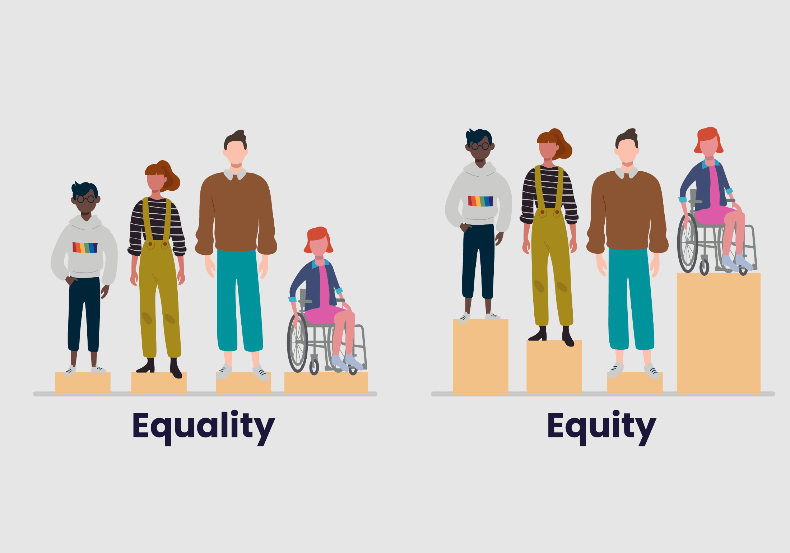

About us
ALl-Inclusive
Our Mission
This project was created for High Tech Hacks 2022, with the goal of promoting diversity, equity, and inclusion in both communities and businesses/organizations in order to bring attention to the problems of marginalized communities. We want to increase awareness about not only explicit biases, but specifically the lesser-known unconscious biases that bleed into all aspects of life.. We want to increase awareness about not only explicit biases, but specifically the lesser-known unconscious biases that bleed into all aspects of life.

So What is Diversity, Equity, and Inclusion?
Diversity is the presence of individuals with varying backgrounds and/or identities, and it is necessary in all communities and organizations because regardless of race, skin color, gender, sexual orientation, or financial status, everyone’s opinions deserve to be heard, and DEI gives people the chance to express themselves.
Furthermore, equity––the fair and just treatment of all people with consideration to the fact that individuals need different resources to succeed due to systematic differences in access to opportunity––is imperative to creating truly diverse spaces. For an organization to be diverse, everyone must have equal opportunities to become a member/employee of the organization, and that requires equity. It can be in the form of financial aid, objective hiring methods, or ESL language resource, as long as it provides marginalized communities with the adequate help to be equally represented.
However, diversity and equity alone aren’t enough. Companies and communities need to be inclusive of everyone’s input––they need to demonstrate inclusion by creating an environment where all individuals are welcomed, respected, supported, and hold real power to lead and succeed. Without inclusion, diversity means nothing because marginalized people will still be pushed aside and discriminated against. Inclusion allows everyone to feel like they belong and they matter, creating more open conversations and diverse perspectives.
To put it simply, diversity is when everyone gets invited to the party, equity is when the people who don’t have cars are provided transportation, and inclusion is when everyone gets equal space to dance.
How Do We Contribute to Diversity, Equity, and Inclusion?
Here at All-Inclusive, we provide a variety of methods (such as self-reflection, learning tools, and awareness articles), resources (such as educational material for kids and an inclusive dictionary), and toolkits for business to promote DEI for every possible community.
First, Diversity:
To promote diversity in businesses and organizations, we provide a Hiring Toolkit to mitigate implicit bias during the hiring process and to create objective methods to evaluate candidates, a Customer Toolkit to ensure that everyone within a company’s target demographic is catered to (for example, a makeup brand for women should provide foundation shades for all women, not just light-skinned women), and the contact information for DEI experts who can be hired.

Next, Equity:
Some of our resources that help communities and organizations become more equitable include our Educative Materials that provide ways to combat bias in children, an article that recommends ways to help people who aren’t native English speakers (such as with ESL services or English tutoring), an article that explains the need for and benefits of gender neutral bathrooms and how to incorporate them, and a We Hear You Toolkit for organizations to allow people to anonymously report microaggressions or give insight on how the community can be improved.

Lastly, Inclusion:
We also have resources that promote inclusion, such as our Communication Toolkit for businesses to emphasize the importance of DEI to employees, our article on the importance of pronouns, our All-Inclusive Dictionary to help people develop a more inclusive vocabulary, a collection of links to unbiased image databases to decrease unconscious bias, our article on how to train your brain to challenge stereotypes, and some diverse pieces of literature and media.

Overall, our Identifying and Reflecting on Unconscious Bias page targets all three attributes of an equal society by honing in on the implicit biases that are present everywhere in our society.
Catering to Our Customers
Here at All-Inclusive, we want to amplify marginalized voices, so we make sure to constantly reach out to members of our community and ask them for input, which we then use to improve and develop the resources we provide.
Since we focus on unconscious biases, which affects everyone, we wanted to create a website that would benefit all marginalized groups (and all people in general) because of the broad nature of our topic. Thus, every aspect of All-Inclusive was created with our users in mind. Our solutions are accessible and easy for everyone to implement, and we also encourage all users to do more research independently and lean in to the subjects they feel are impacting their community the most.
We know that we cannot erase the suffering and oppression marginalized groups face, but at All-Inclusive, we make it a priority to show them that we hear them, we see them, and we care about the prejudice they experience.
All-Inclusive isn’t a solution to discrimination, and it also isn’t a guaranteed creator of DEI, but what it does ensure is a more open perspective to everyone who visits the website, which contributes to a more accepting, inclusive, and equitable mindset in general.
Remember, change starts with you.
- All-Inclusive